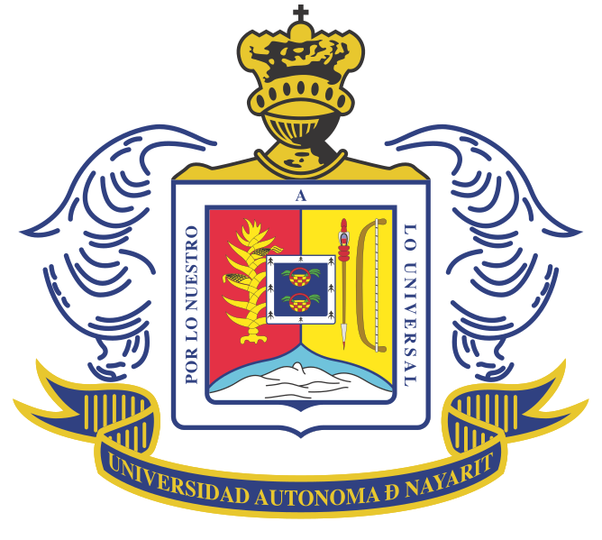

Sobre mí
Hola, mi nombre es Brayan y me dedico a las ciencias básicas e ingeniería enfocado a la ciencias computacionales y la dibulgación científica
Hola cómo están?
Hola, mi nombre es Brayan y me dedico a las ciencias básicas e ingeniería enfocado a la ciencias computacionales y la dibulgación científica
Se me da el área de las ciencias básicas, así como también en general las ciencias computacionales, profesionalizado en los procesos de control, aprendizaje automático, desarrollo web, programación general.

Comencé con mis estudios enfocados a mi vida profesional desde el bachillerato. A la par de mis estudios tuve estudios técnicos en programación aprendiendo cosas fundamentales como la lógica de la programación, desarrollo Front-End básico, consultas básicas en SQL, desarrollo de apps en Adroid, así como de e-commerce y e-learning.
Posteriormente estudié una carrera de ingeniería en Control y Computación. De ahí le tome un gran gusto a trabajar con la electricidad y electrónica, aprendí mucho mas de lo anteriormente comentado, además del desarrollo de sistemas de control enfocados al software y la computación y redes.
En la etapa final de la carrea desarrollé mis prácticas en el Laboratorio de Seguridad Informática e Ingeliegencia Artificial en la Unidad Académica de Ciencias Básicas E Ingenierías de la Universidad Autónoma de Nayarit. Allí aprendí muchas cosas como el procesamiento de señales difitales, de redes e inteligencia artificial, sobretodo enfocado al aprendizaje automártico y aprendizaje profundo. En las IA´s es donde se encuentra una de mis mayores pasiones y el campo de trabajo que más me gusta.
Ingeniero en Control y Computación
Titulado/Cédula Profesional